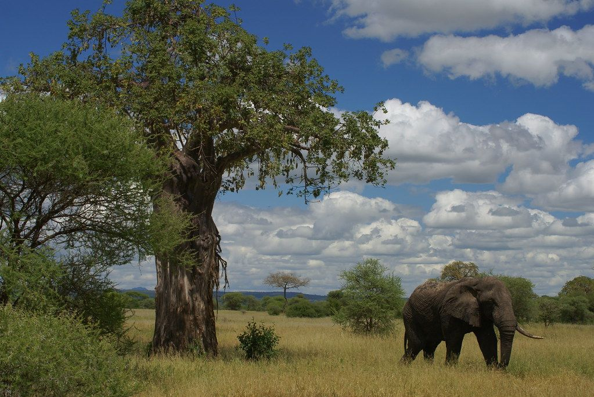

Tanzania · National park · Baobabs, elephant herds

Photo: Soaring Flamingo - Safari & Trekking in TZ (by-nd), illustrative photo
Tarangire National Park in Tanzania is known for baobabs, elephant herds. It is one of the 43 places in the Suki Safari Hub catalogue across Uganda, Kenya, Tanzania and Rwanda. Use the calculator to build an estimate for a trip here, then send it to Suki Expeditions Africa for a personalised quotation.
Baobabs, elephant herds.
Park fee varies, check TANAPA. Recheck official fees before booking.
3 to 4 days. Enough time for game drives and to take the place in without rushing. This is a suggestion, not a fixed itinerary.
SAMPLE, NOT VERIFIED. These are planning ranges, not lodge quotes and not live availability. Confirm the live rate, board basis and inclusions with the lodge before booking. Stay area: Tarangire area and Manyara region.
Plan My Safari All destinations
Build an estimate in the calculator, then request a quote and Suki Expeditions Africa will reply with a personalised quotation. This is an enquiry, not a booking, and no payment is taken here.